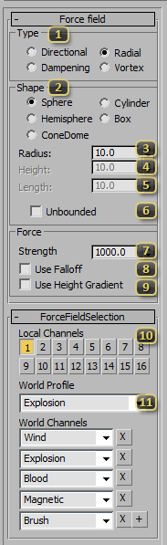

Node: SC2Force
The SC2Force Node can be found in the Helpers create panel. It is a helper that can deliver a push or pull physically controlled bodies, such as SC2Physics Shapes, SC2Particles and SC2Ribbons.
Force Field
The Force field rollout controls the direction, shape, and size of the force node.
Type: defines the way the force is applied.
- Directional force is applied along the node's Positive Z axis. This force is cumulative.
- Radial force is applied using the direction from the node's position to the body receiving the force. Positive is outward. This force is cumulative.
- Dampening This is a drag operation that resists the movement of particles. This force does not affect SC2Physics Shapes.
- Vortex This is a special rotation field that brings particles into a orbit. Does not work with Box Shape applied. This force does not affect SC2Physics Shapes, and will override other forces on affected particles.
Shape: defines the physical the force applies to.
- Sphere is a simple spherical shape defined with the Radius value.
- Hemisphere is a half sphere shape defined with Radius.
- ConeDome shape is special cone shape with length defined as Radius and cone width defined as Angle.
- Cylinder defines a shape with Radius and Height.
- Box A box shape with Width, Height, and Length.
Radius or Width is an animatable spinner controlling shape dimensions. Width is only available with the Box shape.
Height or Angle is an animatable spinner controlling shape dimensions. Angle is only available when the ConeDome shape is selected.
Length is an animatable spinner controlling the length of a box shape.
Unbounded will make this force affect the entire world scene regardless of dimensions.
Strength is the animatable amount of force to the node can apply. Default is 1000 and maximum is 10,000. Vortex forces usually use smaller values from 1 to 100.
Use Falloff will cause the force to have a linear falloff at the outer edge of the shape. The Box shape does not support falloff. Dampening and Vortex types do not support falloff.
Use Height Gradient will create a linear falloff of the force from bottom to top of the shape. Dampening and Vortex types do not support falloff.
Local Channels allows this force to selectively affect only certain particles systems. Within one model, any particle system with at least one of the same local channels enabled will be affected by this force. For performance reasons, most particle systems in StarCraft II use only local forces.
World Profile is a simple way to populate a list of world channels a force will apply to. If this is set to Custom, the SC2Force can be made to be local only be removing the World Channels.
World Channels will list the categories of physics types the force will apply to. Matching channels of SC2Physics Shapes, SC2Particles and SC2Ribbons in the same world scene will be affected by the force. The Brush channel is specific to apply the force to the custom foliage grass models on terrain. To remove a channel click the X next to it. To add a new channel, click the + button.